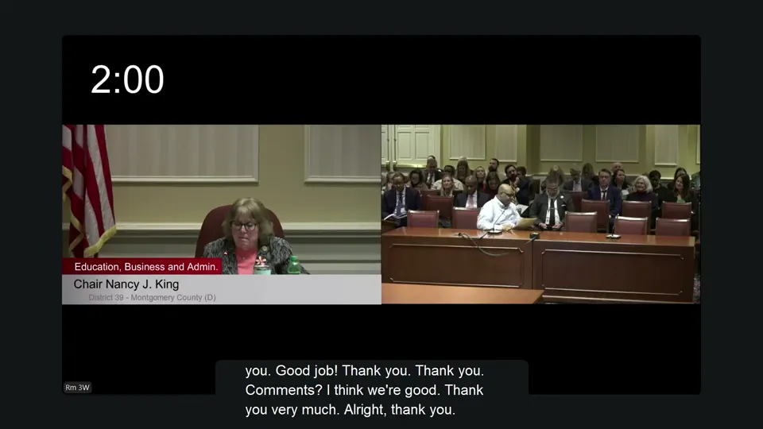
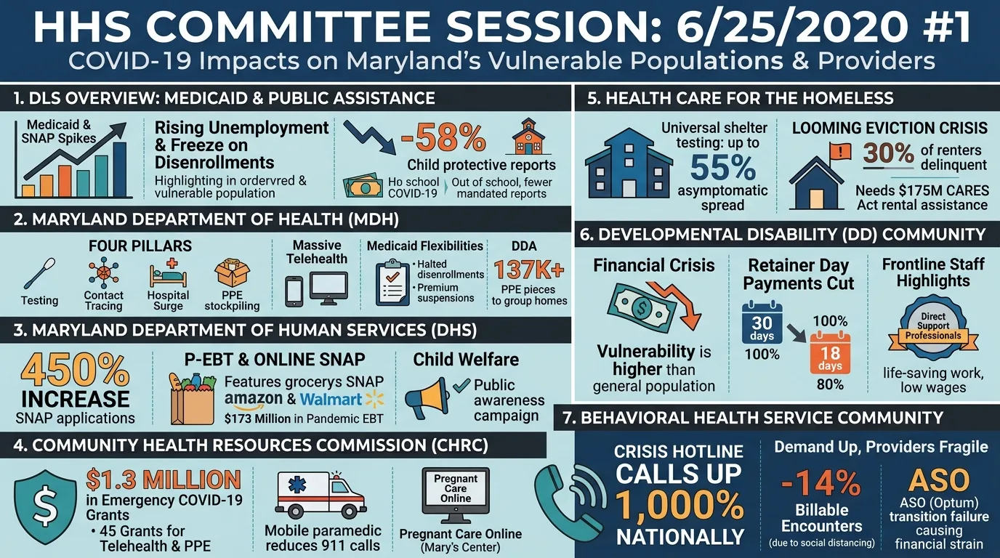

Open source · MIT · Runs on your cloud
Hours of video.
Minutes to read.
youtube-to-docs turns any YouTube video, playlist or channel into searchable transcripts, Q&A that names who asked and who answered, summaries, infographics, audio briefings and WCAG 2.1 AA captions. One command, on the AI provider you already use.
Works with Gemini, Vertex AI, AWS Bedrock and Azure Foundry. Saves to CSV, Google Drive, SharePoint or Hugging Face.
What you get
Everything said, everything shown. Organized.
A transcript is only the start. Each video becomes a set of documents you can search, share, publish and listen to. Every file is listed in a CSV that opens in Excel or Google Sheets.
Transcripts and SRT
YouTube's captions, or a fresh speech-to-text pass with word timings and speaker labels from Gemini, Google Cloud or AWS.
Q&A that names people
Every question, who asked it, who answered, and a link that jumps to the exact second in the video.
Summaries and tags
A full summary, a one-sentence summary and topic tags. Write them from the transcript, or have Gemini watch the video itself.
Infographics with alt text
A one-page visual of the session, with descriptive alt text written by a model that looks at the image.
Audio and video briefings
The summary read aloud by a natural voice, and combined with the infographic into a short video you can share.
Any language
Transcripts, captions, summaries, Q&A, audio and video in a second language, translated by an LLM, AWS Translate or Google Cloud Translation.
Accessibility, built in
Auto-captions aren't compliant. These are.
One flag, -cc, makes a video accessible under WCAG 2.1 Level AA and Section 508. It produces the files that public bodies, universities and publishers need, instead of the raw output of speech recognition.
Corrected captions
Timing is checked word by word against a second transcript. Misheard words, names, punctuation and missed speech are fixed. Every speaker is named on each change, using the name plates shown on screen. Lines are laid out at two 42-character lines over 1–7 seconds.
Audio description
Slides, chart figures, on-screen text and votes are described for blind viewers and fitted into pauses in the speech. You get WebVTT description tracks, a descriptive transcript and a video with the descriptions narrated.
What the corrections look like
These lines come from a 2 hour 43 minute Maryland Senate budget hearing on the Departments of Information Technology, Labor and Commerce. The left column is YouTube's auto-captions. The right column is the -cc output, shown exactly as generated, with the changes in bold.
| YouTube auto-captions | Corrected by -cc |
Time |
|---|---|---|
| Um we are first going to do the department of information technology this afternoon. Uh Yashadari Ry is our budget analyst | We are first going to do the Department of Information Technology this afternoon. Yashodhara Rai is our budget analyst, | 00:04:12 |
| do it noted that it was working with the office of state procurement. | DoIT noted that it was working with the Office of State Procurement. | 00:06:28 |
| 103,000 service test tickets were received in fiscal 25. Of these 84% were resolved by force contact | 103,000 service desk tickets were received in fiscal 25. Of these, 84% were resolved by first contact | 00:07:05 |
| >> Thank you, Senator Bailey. >> Thank you, Madam Chair. | [Chair Nancy J. King] Thank you. Senator Bailey. [Sen. Jack Bailey] Thank you, Madam Chair. | 01:10:55 |
| I'm Stephan Covenant. | I'm Stefan Komoniewski. | 02:16:21 |
| my name is Britney Eris Mendy | My name is Brittany Arizmendi, | 02:33:27 |
Names, agencies and acronyms are fixed using what's said and shown in the video, and the speaker is named every time it changes. Across the hearing, -cc made 2,492 captions and restored 5 lines the transcription missed. A meeting this long takes about 20 minutes and roughly $3 with the default models. You also get an Able Player page that opens straight from disk, so you can check the captions and descriptions before you publish.
What the audio description looks like
The same run found the moments where something important is shown but not said, and described them. Short descriptions are spoken in pauses in the speech. Full descriptions go in the extended track and the descriptive transcript.
Spoken in a pause (00:00:08): "Text: Chair Nancy J. King, District 39, Montgomery County, Democrat."
Full description: A lower-third graphic reads, "Education, Business and Admin., Chair Nancy J. King, District 39, Montgomery County, Democrat."

Spoken in a pause (01:19:36): "A two-minute timer appears above Chair Nancy J. King."
Full description: A split-screen view shows Chair Nancy J. King speaking on the left beneath a two-minute timer, while Tim Walker sits at the witness table on the right.
Human-centered
AI drafts it. People decide what's published.
Every output is a file you can open, check and change: transcripts, captions, speakers, Q&A and summaries. Edit them in a text editor, Google Docs or Word. The next run uses your edits instead of overwriting them.
Fix the transcript once
Correct a misheard name or a missing sentence in the transcript. Summaries, Q&A, infographics and audio you make afterwards are built from your corrected text.
Review before you publish
Nothing is published for you. Read the captions, summary and alt text, edit anything that's wrong, and delete any output you want made again.
Real output
A four-hour public hearing, made readable
These outputs come from a single run on a Maryland Senate Health and Human Services subcommittee session about COVID-19's impact on vulnerable populations. They are shown exactly as generated, without edits.

gemini-nano-banana-2.1 from a gemini-4-argon summary. Image models can still misspell small text.- Speakers identified with their titles, such as Robert Neall (Secretary, Maryland Department of Health)
- 24 questions paired with their answers and timestamp links
- Summary organized by agency and by testimony
- Alt text describing all seven panels of the infographic
- Audio summary, tags and a one-line summary for the catalog
Excerpt from the Q&A table
| Questioner | Question | Responder | Time |
|---|---|---|---|
| Jim Rosapepe (Senator) | Is it freezing us from dropping people from Medicaid or freezing us from adding people? | Simon Powell (Principal Policy Analyst, DLS) | 00:23:31 |
| Jim Rosapepe (Senator) | And the 6% is for what exactly? | Simon Powell (Principal Policy Analyst, DLS) | 00:23:55 |
| Adelaide Eckardt (Senator) | Were you surprised there wasn't more increased enrollment on the Shore? | Simon Powell (Principal Policy Analyst, DLS) | 00:25:56 |
How it works
From link to library in four steps
Point it at YouTube
Use a video URL, a video ID, a playlist or a whole @channel. Batches are handled for you.
Get the words
Use YouTube's captions, or transcribe the audio again for real word timings and speaker labels.
Let the model read
Your chosen LLM extracts speakers, Q&A, summaries and tags. Gemini can also watch the video for on-screen context.
Publish anywhere
Save files locally, or to Google Drive, SharePoint or a Hugging Face dataset. The cost of each video is tracked in the CSV.
Who it's for
Built for teams with more video than time
Governments and legislatures
Make hearings, council meetings and briefings searchable and accessible. Process an entire channel archive, not just the next meeting.
Communications and media teams
Turn every webinar, keynote and interview into ready-to-publish summaries, social-ready infographics and audio briefings.
Researchers and analysts
Build a structured corpus from hundreds of videos. Compare models side by side, count terms and load everything into a dataframe.
AI agents and builders
Install it as a Claude Code or Antigravity plugin, call it over MCP, run the web app or import it as a Python library.
Why not just download the transcript?
A transcript is raw material. This is the finished document.
| Feature | Transcript downloaders | youtube-to-docs |
|---|---|---|
| Transcript and SRT | Yes | Yes |
| Q&A with speakers and timestamp links | No | Yes |
| Summaries, tags, infographics, audio | No | Yes |
| WCAG 2.1 AA captions and audio description | No | Yes |
| Whole playlists and channels | Sometimes | Yes |
| Choice of AI provider | No | Gemini, Vertex AI, Bedrock, Foundry |
| Cost per video recorded | No | Yes |
| Output to Sheets, Excel, Drive, SharePoint | No | Yes |
Get started
Up and running in one line
No clone, no virtualenv. If you have uv, you can run it now. Pick the way you work:
# Everything, best quality: summaries, Q&A, infographic, audio and accessible captions
uvx --with "youtube-to-docs[all]" youtube-to-docs https://www.youtube.com/watch?v=B0x2I_doX9o -a gemini-pro -cc
# A whole channel, summaries only
uvx youtube-to-docs @mga-hgo1740 -m gemini-3.5-flash-lite
Set YOUTUBE_DATA_API_KEY and GEMINI_API_KEY first (see Setup). Artifacts land in youtube-to-docs-artifacts/, and every option is in the Usage guide.
claude plugin marketplace add DoIT-Artificial-Intelligence/youtube-to-docs
claude plugin install youtube-to-docs@youtube-to-docs
Then ask: "Make the best accessible captions for https://www.youtube.com/watch?v=B0x2I_doX9o", or run /youtube-to-docs <url>.
Then ask for what you want in plain language, e.g. "Save a summary of this video in Spanish".
Open http://localhost:8000, paste a link and watch progress live. See the Web App docs.
Optional extras and installing uv
Keep installs light by adding only what you need with --with "youtube-to-docs[extra,...]":
audio (download audio and video with yt-dlp) · video (build MP4s with ffmpeg) · workspace (Google Drive) · m365 (SharePoint and OneDrive) · aws (Bedrock) · azure (Azure OpenAI) · gcp (Gemini, Vertex AI and Google Cloud speech) · app (web app) · all (everything)
Install uv:
- macOS/Linux:
curl -LsSf https://astral.sh/uv/install.sh | sh - Windows:
powershell -ExecutionPolicy ByPass -c "irm https://astral.sh/uv/install.ps1 | iex"
Free and open source
Your video archive, finally readable.
Start with one video. Then point it at the whole channel.
Created with the help of AI. All artifacts have been checked and work as expected. Model pricing is tracked on the Pricing page.